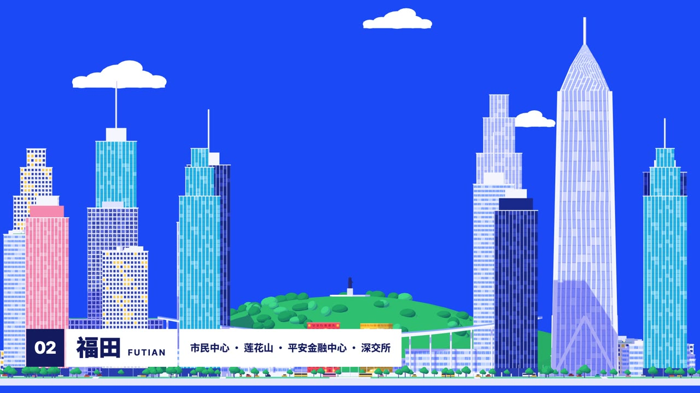

01
Folding City
折叠城市
for Shenzhen, Folded
Three districts of Shenzhen as flat posters that open into streets, fold like doors and screens, and stand up as walls until the city closes into a U.
深圳三个区像三张平面海报：拉开变成街道，楼像门扇和屏风一样折起来，整块地立成墙，最后把城市折成一个 U。
- City and district promos
- Campus, park or property walk-throughs
- Openers for travel and place-based series